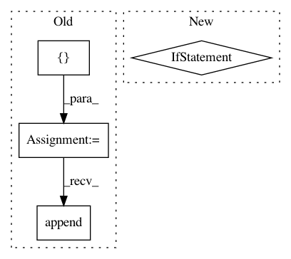

0588c1499059ca17db7bc72de5e8783f479a495e,softqlearning/value_functions/value_function.py,MeanQFunction,output_for,#MeanQFunction#Any#Any#Any#,78
Before Change
self._observations_ph, self._actions_ph, reuse=True)
def output_for(self, observations, actions, reuse=False):
outputs = []
for i, q_function in enumerate(self.q_functions):
outputs.append(
q_function.output_for(observations, actions, reuse=reuse))
output = tf.add_n(outputs)
return output
After Change
def output_for(self, observations, actions, reuse=False):
outputs = [
qf.output_for(observations, actions, reuse=reuse)
for qf in self.q_functions
]
output = tf.add_n(outputs)
return output
In pattern: SUPERPATTERN
Frequency: 3
Non-data size: 4
Instances
Project Name: rail-berkeley/softlearning
Commit Name: 0588c1499059ca17db7bc72de5e8783f479a495e
Time: 2018-02-24
Author: haarnoja@berkeley.edu
File Name: softqlearning/value_functions/value_function.py
Class Name: MeanQFunction
Method Name: output_for
Project Name: rail-berkeley/softlearning
Commit Name: 459441e166ebcd176698041e260d4f467652e7ac
Time: 2018-07-21
Author: kristian.hartikainen@gmail.com
File Name: softlearning/policies/uniform_policy.py
Class Name: UniformPolicy
Method Name: get_action
Project Name: rail-berkeley/softlearning
Commit Name: 459441e166ebcd176698041e260d4f467652e7ac
Time: 2018-07-21
Author: kristian.hartikainen@gmail.com
File Name: softlearning/policies/nn_policy.py
Class Name: NNPolicy
Method Name: get_actions